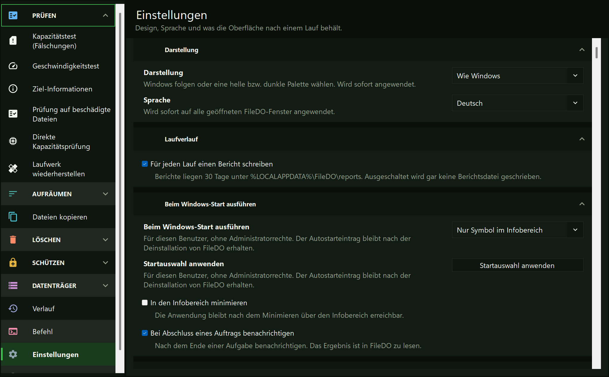
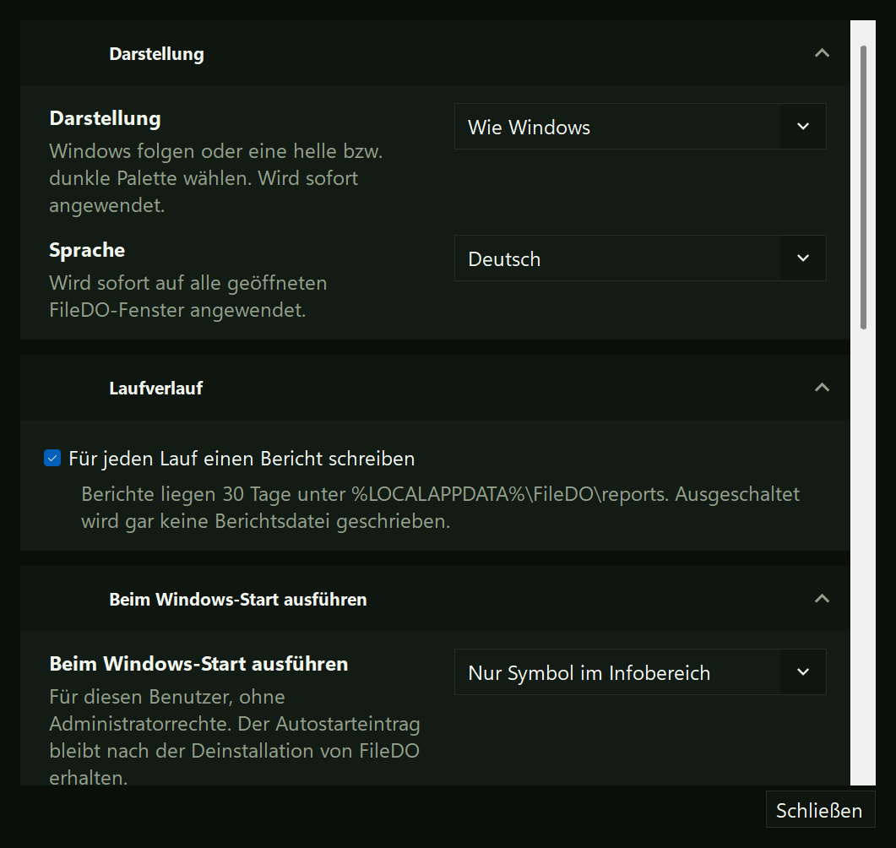
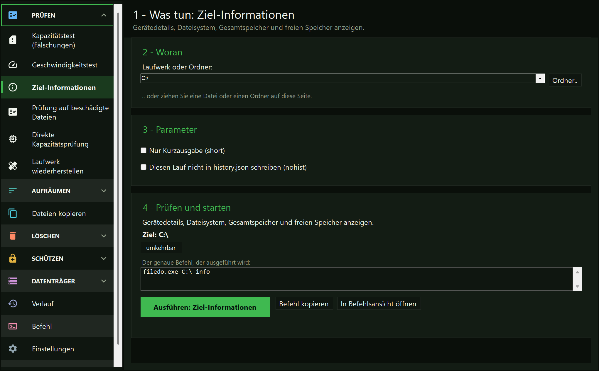
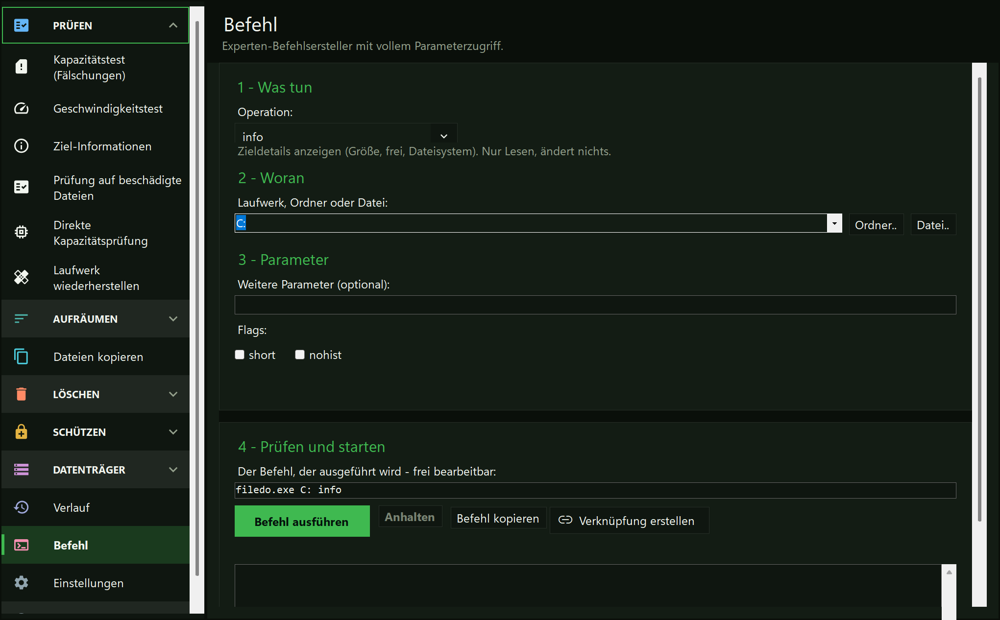

Sie wählen lieber eine Aufgabe
Wählen Sie die Aufgabe in der Leiste und füllen Sie ihre Seite aus, statt jedes Argument zu tippen.
Anleitung · FileDO GUI
FileDO GUI ist das Windows-Fenster für dieselben FileDO-Befehle. Es öffnet sich als Shell: links eine Leiste mit den Aufgaben und je Aufgabe eine nummerierte Seite - was bearbeitet wird, welche Parameter, dann Prüfen und Ausführen. Die Sicherheitsregeln ändert es nicht: Es macht Ziel, Operation und Befehl vor der Ausführung sichtbar.
Die Einstellungen sind im Hauptfenster und über die Schaltfläche „Einstellungen“ der Datenträgerverwaltung erreichbar. Designwechsel gelten sofort; Sprachwechsel gelten nach dem erneuten Öffnen. Wählen Sie den Start bei der Windows-Anmeldung: Aus, FileDO, Datenträgerverwaltung oder nur das Symbol im Infobereich. Für den Start sind keine Administratorrechte nötig; der Eintrag bleibt nach dem Deinstallieren bestehen. In der Store-Version nutzen Sie die Windows-Einstellungen, Apps - Autostart, oder den Task-Manager. Ein manueller Start zeigt immer ein Fenster. „In den Infobereich minimieren“ gilt für beide Fenster; ein Klick auf das Symbol öffnet FileDO. Sein Menü öffnet die Verwaltung und die Einstellungen, stoppt eine Aufgabe, trennt alle eingebundenen Datenträger und beendet das Programm. Beenden während einer Aufgabe fragt nach, was geschehen soll. Benachrichtigungen am Ende können abgeschaltet werden; das Zurücksetzen der Fensterpositionen gilt beim nächsten Öffnen.


Wählen Sie die Aufgabe in der Leiste und füllen Sie ihre Seite aus, statt jedes Argument zu tippen.
Jede Seite beginnt mit dem Ziel und endet mit einer Prüfung, sodass Sie das Ziel vor dem Start vor Augen haben.
Die Seite „Befehl“ zeigt die Befehlszeile: Sie lässt sich bearbeiten, kopieren oder ausführen.
Die Seite „Über“ zeigt den Build, die Links und eine Schaltfläche „Logs an den Autor senden“ (im älteren Fenster die Schaltfläche „Über“ oben rechts): Die Logs werden in ein ZIP gepackt, der Ordner öffnet sich mit markierter Datei, der Pfad landet in der Zwischenablage, und Ihr Mailprogramm öffnet sich mit der Adresse des Autors und einem Betreff. Das Archiv anzuhängen und die Mail abzuschicken ist Ihr Schritt - FileDO selbst überträgt nichts.
filedo_win aus dem winget-/Store-Paket oder filedo_win.exe neben filedo.exe im portablen ZIP. Die Shell öffnet sich mit der Leiste der Aufgaben links.

Die Leiste listet die Aufgaben, und jede Aufgabe öffnet eine nummerierte Seite: was bearbeitet wird, welche Parameter, dann Prüfen und Starten. Es gibt Seiten für einen Kapazitätstest, einen Geschwindigkeitstest, Ziel-Informationen, eine Prüfung auf beschädigte Dateien, eine direkte Kapazitätsprüfung, die Wiederherstellung eines Laufwerks, doppelte Dateien, den Vergleich zweier Ordner, das Füllen des freien Speichers, das Kopieren von Dateien und das Leeren eines Ordners; daneben stehen die Seiten „Schützen“, die Seiten „Datenträger“, „Verlauf“, „Einstellungen“ und „Über“. Jede Option, die die CLI für eine Aufgabe kennt, steht auf ihrer Seite.

Der Experten-Baukasten: jede Operation, die filedo.exe kennt, mit den Schaltern und Regelauswahlen, die zur gewählten Operation gehören, und der bearbeitbaren Befehlszeile darunter. Lesen, von Hand bearbeiten, kopieren oder ausführen.
„Verknüpfung erstellen“ speichert diese Zeile auf Ihrem Desktop. Ein Doppelklick führt den Befehl in einer Konsole aus; das Standard-Kontrollkästchen hält das Fenster offen, damit Sie das Ergebnis lesen können. Eine Verknüpfung speichert ihre Argumente, deshalb lässt sich eine Zeile mit einem Passwort p: oder mit pe:FILEDO_SHELL_CRED nicht speichern. Entfernen Sie dieses Argument und geben Sie das Passwort in der Konsole ein.
Operationen, die ein Passwort brauchen, erhalten hier ein eigenes maskiertes Feld, und secure fragt zweimal. Das Passwort gelangt nie in die Befehlszeile: Die Zeile enthält nur pe:FILEDO_SHELL_CRED, den Namen der Variablen, die es an den Lauf weitergibt. Ein secure, das das Original löscht oder überschreibt, braucht von hier aus außerdem -y; ohne es bleibt das Original erhalten, und der Lauf sagt das.
Drei Seiten machen eine Datei geheim, holen das Original zurück und öffnen eine geheime Datei ohne Entpacken. Das Passwort wird maskiert und beim Packen zweimal eingegeben; ein leeres Passwort wird akzeptiert und bedeutet nur Verschleierung, ohne Geheimhaltung.
Was mit dem Original geschieht, wird gewählt, bevor etwas läuft: behalten (Standard), löschen oder überschreiben und dann löschen. Nur Letzteres verlangt, dass Sie WIPE eintippen. Das Öffnen eines Containers startet einen Lauf, der genau so lange dauert, wie die Klartextkopie existiert; die Schaltfläche „Kopie jetzt entfernen“ beendet ihn.
Das Format und was es schützt und was nicht, steht in der Anleitung zu geheimen Dateien.
Siebzehn Seiten für die virtuellen .fdd-Datenträger: die Liste der eingebundenen, anlegen, einbinden, trennen, Info, prüfen, ein Abbild exportieren und die übrigen Operationen. Jede Seite sagt, ob der Container verschleiert oder verschlüsselt ist, bevor etwas läuft; das Passwort wird maskiert und gelangt nie in eine Befehlszeile. Ein eingebundener Datenträger bleibt eingebunden, wenn das Fenster geschlossen wird. Die erste Zeile der Gruppe öffnet die Datenträgerverwaltung, ein zweites Fenster, das alle Datenträger an einer Stelle auflistet. Die Anleitung zu virtuellen Datenträgern.
Die GUI macht wipe, fill … del oder Löschmodi nicht umkehrbar. Prüfen Sie Ziel und Befehl vor dem Start; sichern Sie Ihre Daten vor unwiderruflichen Aktionen. „Direkte Kapazitätsprüfung“ und „Laufwerk wiederherstellen“ sind als zerstörerisch markiert und verlangen Administratorrechte; „Ordner leeren“ verlangt weiterhin das ausgeschriebene WIPE und das gesetzte -y und schickt ein Laufwerks-Stammverzeichnis, eine Freigabe oder TEMP in die Konsole.
Ein Doppelklick auf eine .fd-sec-Datei öffnet das Fenster auf diesem Container. Von der Befehlszeile aus ist dasselbe filedo_win.exe C:\a\secret.fd-sec. Jeder Container bekommt sein eigenes Fenster.
Das Fenster schreibt seine Fehler immer nach %LOCALAPPDATA%\FileDO\filedo_win.session-*.log - die Datei, die „Logs an den Autor senden“ weitergibt. Der Schalter -debug fügt ihr ausführliche Zeilen hinzu.